触达系统需求
页面数据均为示例
后台结构
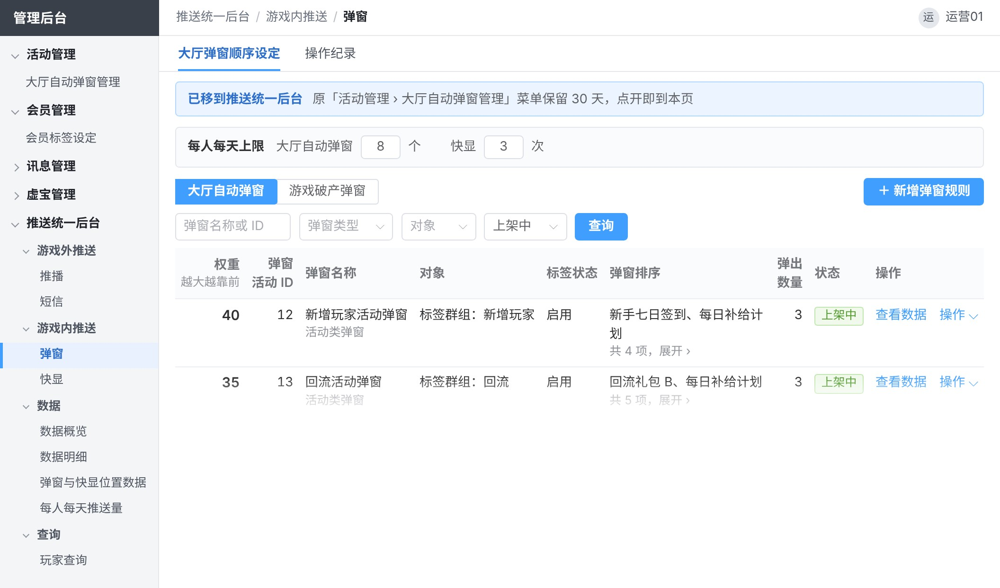
第一部分
游戏外推送第 1–3 页
第一部分 游戏外推送第 1 页 / 共 10 页
按玩家分群推送
推播 · 日历
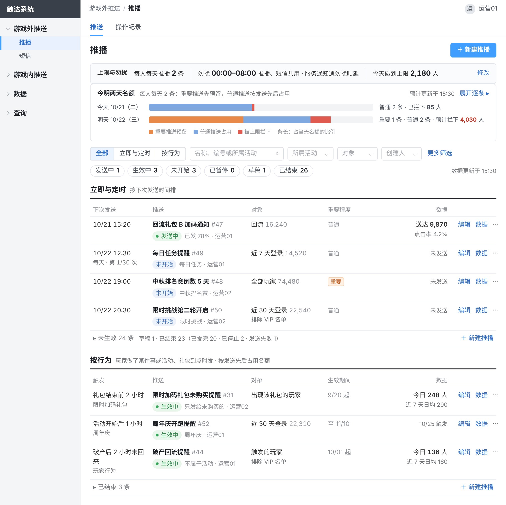
推播 · 修改上限与勿扰
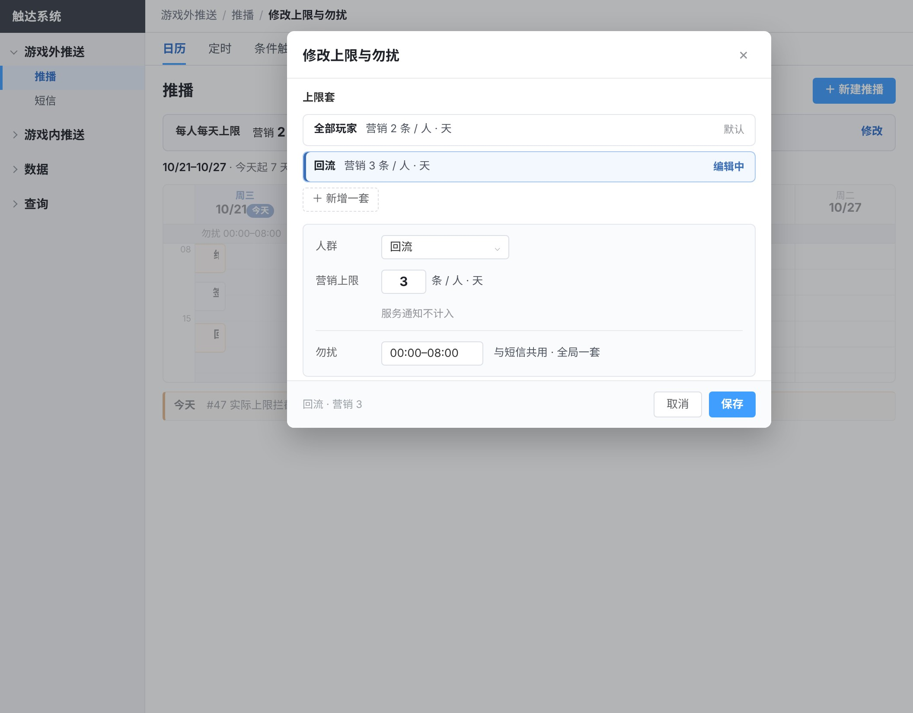
推播 · 合池
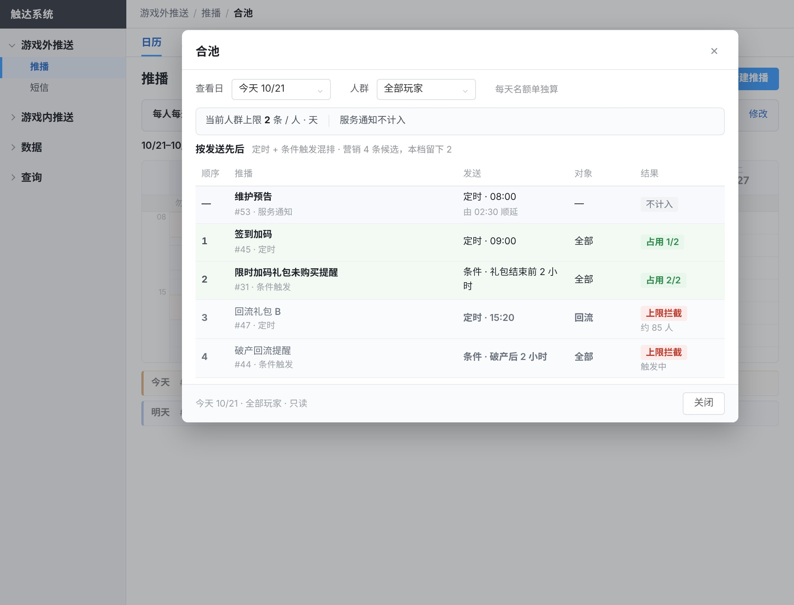
推播 · 定时
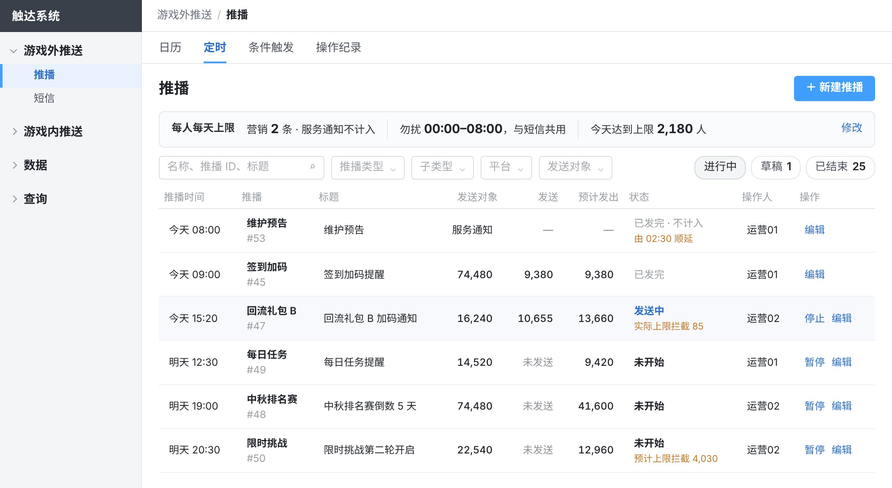
推播 · 条件触发
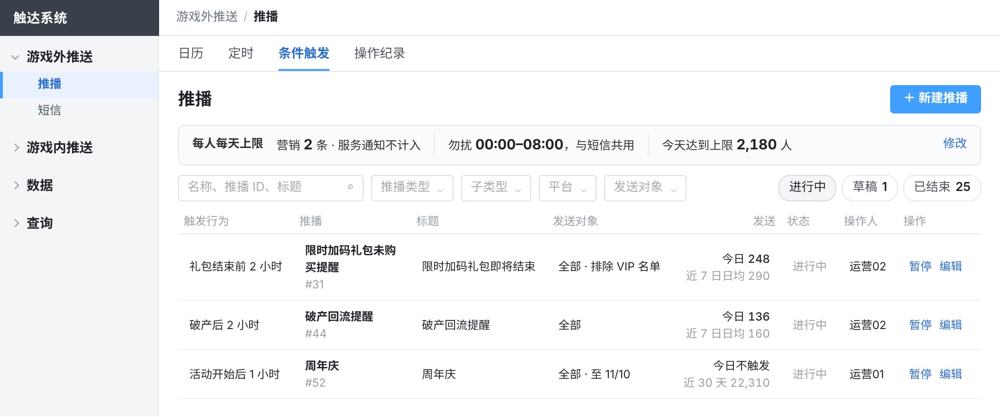
推播 · 停止确认
点停止后
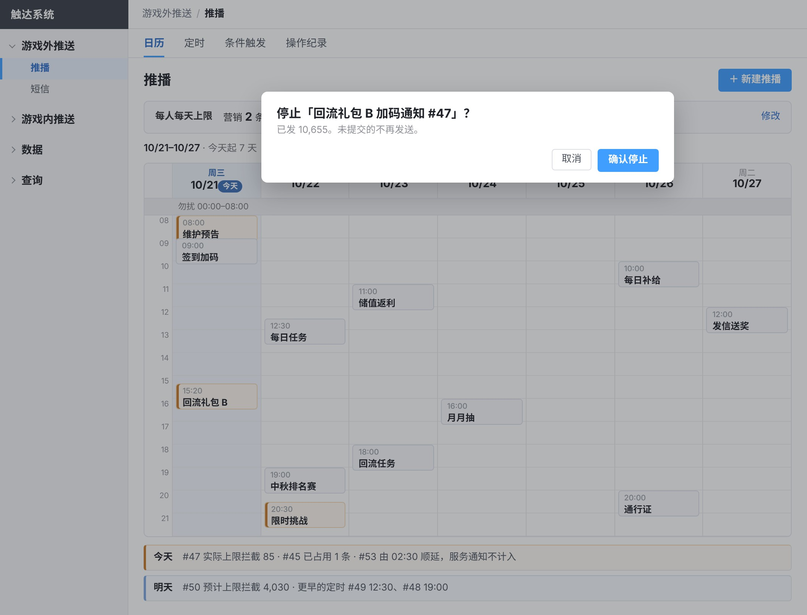
操作纪录页签
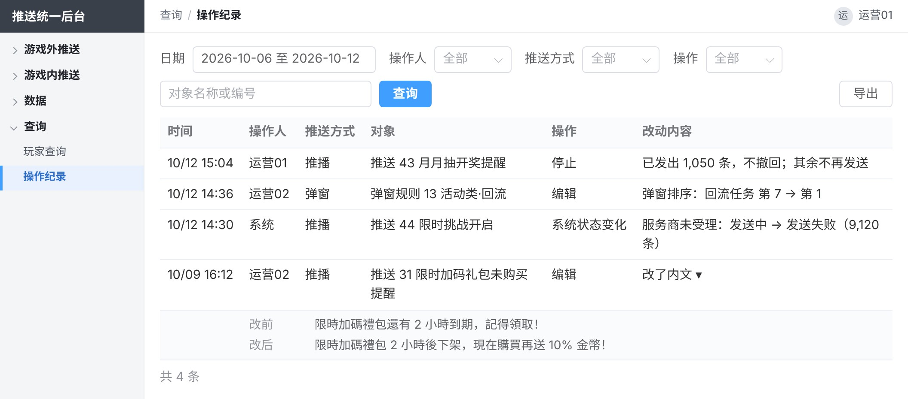
展开一条改内文
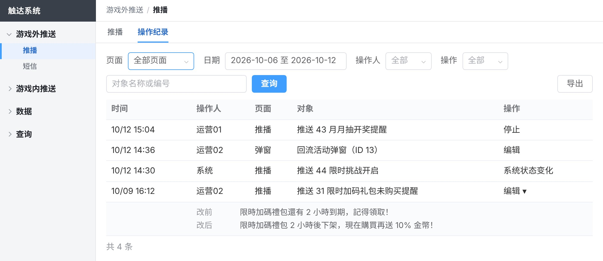
新建推播
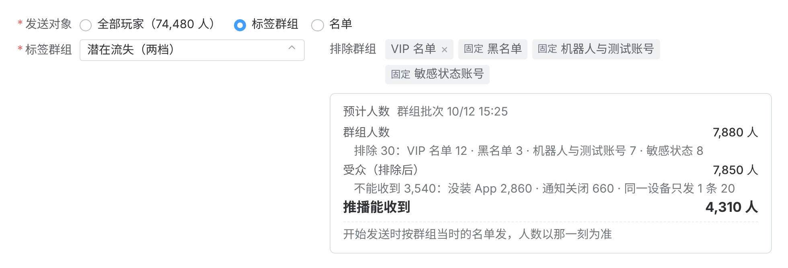
点保存并发布后
标签群组（在会员标签设定里建）
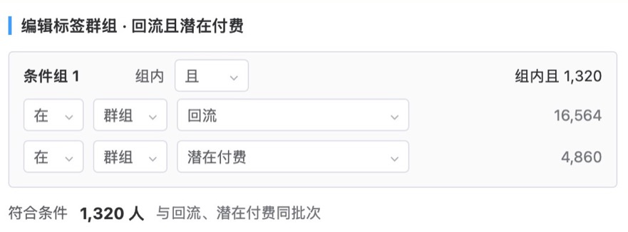
业务规则研发要做的改动 · 列表 · 上限与勿扰 · 合池 · 今天起 7 天 · 操作纪录 · 内容 · 对象 · 发送时间 · 所属活动 · 保存与发布 · 标签群组
研发要做的改动
| 标签群组设定页加「测试群组」勾选框：勾上的群组出现在推播、短信「发送测试」的测试群组下拉里。 |
列表
| 推播三个页签：日历、定时、条件触发。日历为今天起 7 天（10/21–10/27），格子写钟点、名称。推播 ID、状态和上限拦截人数在悬停，上限拦截与顺延在格子左侧用色条标出。定时按发送时间排列，7 天之后的定时也在这一页。条件触发单独一页，发送列写今日人数，下方写近 7 天日均。今天已经发出、占了当天名额的留在今天。草稿、已结束是定时和条件触发上的状态计数，不另开页签。已结束默认不列出。 |
| 定时每行：推播时间、推播名称（名称下为推播 ID，创建人与创建时间在名称悬停）、标题（单独一列，一行，超出截断；内容在标题悬停）、发送对象、发送、预计发出、状态、操作人、操作。发送是实际受理条数：未发送写「未发送」，发送中写已发条数。#47 发送 10,655，预计发出 13,660。#45 已发完，发送与预计发出都是 9,380。#53 服务通知不计入，不编发送条数。上限拦截写在状态里，无上限拦截的不写 0。#47 为 85，#50 为 4,030。 |
| 条件触发每行把推播时间换成触发行为。发送列写今日人数，下方灰字写近 7 日日均，不再另开一列。#31 今日 248、近 7 日日均 290。#44 今日 136、近 7 日日均 160。#52 今日不触发，下方近 30 天 22,310。日均不加入 4,030。发送对象写触发后的限定：#31 全部 · 排除 VIP 名单，#44 全部，#52 全部 · 至 11/10。 |
| 发送中的行上是停止，未开始和生效中的行上是暂停；编辑、数据在行上，复制在「⋯」里。一个搜索框搜名称、编号或所属活动，按所属活动、对象、创建人、创建日期筛选，即时生效。 |
上限与勿扰
| 列表顶部只读显示默认营销上限、勿扰与今天达到上限的人数。顶栏只读旁仅「修改」入口，改上限与勿扰。合池不放顶栏，从日历今天摘要旁「看合池」进入。两事不放同一界面。 |
| 「修改」打开后可维护多套上限。每套指定人群（标签群组下拉）与营销条数；不设时间范围。本原型演示「全部玩家 · 营销 2」与「回流 · 营销 3」。 |
| 每人每天上限：推播默认 2 条（沿用现行运营规范）、短信 1 条，各在自己的列表顶部设，上线后可调；推播、短信各自计数，与快显互不占用。弹窗不另设每人每天上限。服务通知不计入。 |
| 到上限后当天不再发、不补发，次日 00:00（台湾时间）重新计数。 |
| 勿扰时段 00:00–08:00，只对推播、短信生效，两种共用、全局一套；推播、短信列表顶部显示的是同一个；现行系统推送的勿扰时段 22:00–08:00 统一为 00:00–08:00。勿扰在「修改」里改，不按上限套拆分。 |
| 命中勿扰时，定时推送整条顺延到 08:00，条件触发默认放弃；服务通知默认顺延，可在列表顶部改为照发，其中账号安全通知（停权、异常登录）默认不受勿扰。 |
| 每条推送依次判断可接收、勿扰时段、每人每天上限，前一步拦截的不进入下一步。 |
合池
| 日历今天摘要旁「看合池」单独打开合池。选查看日（默认今天）与人群（标签群组下拉，含全部玩家），展示该人群在该日按发送先后的占用与拦截。不含改上限。 |
| 表列：顺序、推播、发送、对象、结果。营销按发送先后占用名额；服务通知不计入、结果写「不计入」。已占用写「占用 n/上限」，被拦写「上限拦截」及人数或「触发中」。 |
| 查看日只管合池看哪一天（每天名额单独算）；人群筛选对应该日该人群所用的上限档。上限「修改」不设时间范围。 |
| 本原型查看日今天 10/21、人群全部玩家：#53 不计入；#45、#31 占用 1/2、2/2；#47、#44 上限拦截。 |
今天起 7 天
| 日历排今天起 7 天的定时。7 列是这 7 天，列头写星期和日期，今天高亮。左侧时间从上到下，条目按发送时间放在对应格子。勿扰 00:00–08:00 为一条灰条。上限拦截的人数写在该条目上。已开始的写实际上限拦截，未开始的写预计上限拦截。 |
| 10/21 为 #53、#45、#47。10/22 为 #49、#48、#50。10/23 两条，10/24 一条，10/25 没有定时，10/26 两条，10/27 一条。10/23–10/27 为示例条目。 |
| #47 实际上限拦截 85。#45 已占用 1 条。#53 服务通知不计入，由 02:30 顺延到 08:00。#50 预计上限拦截 4,030，更早的定时为 #49 12:30、#48 19:00。4,030 为合计。条件触发的今日与日均写在发送列，不计入 4,030。 |
| 条件触发的发送列写今日人数，下方写近 7 天日均。#31 今日 248、近 7 日日均 290；#44 今日 136、近 7 日日均 160；#52 今日不触发，下方近 30 天 22,310。 |
| 同一天按发送时间先后占用名额。 |
操作纪录
| 推播、短信、弹窗、快显各页沿用现有的「操作纪录」页签，默认只列本页面的记录；页面选「全部页面」时跨页面查，可导出。 |
| 按页面、日期、操作人、操作、对象名称或编号查询。 |
| 列表列：时间、操作人、页面、对象、操作；不展示改动内容摘要列。改前改后等细节靠展开查看。 |
| 改内文这类操作可展开，对照改前与改后。 |
| 系统自动发生的状态变化，如到时开始发送、发送失败、生效期间结束，也记录，操作人记为「系统」。 |
| 推播、短信、快显与弹窗规则的新建、编辑、发送、停止，列表顶部上限与勿扰的修改，以及测试发送，每次各记一条；记录只增不改不删。 |
| 活动、礼包改期后，发送时间随之变动的推播、短信和快显各记一条，操作人记为「系统」。 |
内容
| 标题与内容按繁中、越南文、英文三种语言填，可一键生成另外两种后再改；玩家收到自己游戏语言的那一种。 |
| 新建时选消息类别：营销或服务通知。营销受每人每天上限和勿扰；服务通知（补偿到账、维护、账号安全、绑定结果）不受上限、不计入当天条数。 |
对象
| 对象三选一，推播、短信、弹窗、快显相同： 全部玩家 标签群组：下拉只列已存群组（不含散标签），可多选；VIP 卡别也以群组出现在下拉里 名单：上传会员编号，可再加只限（群组）；只用于定时，如中奖、补偿名单 条件触发推送的对象为触发的玩家，可加只限（群组）。 |
| 多选时切换「满足任一｜同时满足」：满足任一取并集，同时满足取交集，同一人只收 1 条。嵌套组合（如 A 且 B，或 C）先在「标签群组设定」页存成群组，再在下拉里选；下拉旁常显「复杂组合可在标签群组设定页存成群组」。 |
| 排除：只选群组，可多选。 固定不发，不能移出：黑名单、敏感状态账号（停权、自我限制、注销处理中）；机器人与测试账号也固定不发，对象为「名单」时除外（名单是运营点名的人）。「固定不发」一行随所选对象显示实际扣除的项。 默认排除，运营可移出：VIP 名单 |
| 可接收的玩家： 推播：装了 App 且开启通知的玩家 短信：有有效手机号且未退订的玩家 同一设备或同一手机号只发 1 条 |
| 人数固定三行、每行一个数，随选随算：符合对象、扣除排除后、预计可接收。预计可接收旁常显短说明：再扣不可接收（推播为未装 App、未开通知、同设备去重；短信为无有效手机号、已退订、同号去重）。定时到点再按当时对象重算可发人数；因每天上限发不出的人数，写在该行「预计上限拦截」。 |
发送时间
| 推播分定时、条件触发两种。定时默认带出下一整分钟。条件触发的设置见第 2 页。 |
| 定时按开始发送时的对象发送。 |
| 定时可设每天或每周几重复，填重复至哪天（不超过 90 天）；每次到点按当时对象发送。 |
所属活动
| 推播、短信、快显新建时选所属活动，或选「不属于活动」；所属活动和点击跳转的页面从后台现有的活动、礼包里选。 |
| 弹窗规则里的每个弹窗内容各对应一个活动或礼包，同样从现有的活动、礼包里选（见第 4 页）。 |
保存与发布
| 编辑页四段：名称与类别、对象、内容、发送时间；对象段下显示人数三行，右侧摘要写预计可接收与发送时间。 |
| 底部固定操作栏：新建与草稿为取消、存为草稿、发送测试、保存并发布；发送中、生效中与未开始的为取消、发送测试、保存。有未保存的改动时左侧写出改了什么。 |
| 保存并发布前弹出确认，列出发送时间、对象与人数三行；发给全部玩家时多一步核对总人数。编辑已发布的推送时，确认框按「改了什么｜改前｜改后｜差值」四列列出，人数三行各占一行。 |
| 发送测试（推播、短信）：按钮旁常显用途。点后选一个或多个测试群组（下拉只列勾了「测试群组」的群组，默认带上次所用），也可另填会员编号，单次最多 50 人，超出时提示；按表单当前内容发一次。测试群组即普通标签群组，在标签群组设定页勾「测试群组」；不计入数据，不受每人每天上限与勿扰；短信写出本次则数与费用；记一条操作纪录。 |
| 发送中的可停止，已发出的不撤回。 |
标签群组
| 现有：在会员标签设定里用会员标签按且、或、排除组合出一组玩家，随标签数据定时更新。 |
| 新增功能：建群组时可在群组之间取交集，如「回流且潜在付费」；每个条件显示人数。 |
| 新建 7 个标签： · 潜在付费：注册第 7–60 天、从未储值、近 14 天押注合计不低于 20,000（游戏内货币） · 潜在流失两档：注册满 28 天、近 7 天内有登录、第 15–28 天登录不少于 4 天，且近 14 天登录 2–3 天；另一档其余相同、近 14 天登录 1 天；两档的群组都排除新增、回流玩家 · 近 7 天发生过破产 · 注册后未再登录两档：注册次日未再登录；注册第 3 天未再登录 · 随机分桶号：按会员编号和所属实验算出的 0–99，每位玩家在同一实验里固定一个号，实验改名不重新分组；用来分实验组与对照组（见第 4 页） |
| 在用的标签群组不能停用或删除；修改在用的群组时，保存前列出受影响的推播、短信、快显和弹窗规则。 |
第一部分 游戏外推送第 2 页 / 共 10 页
条件触发推送
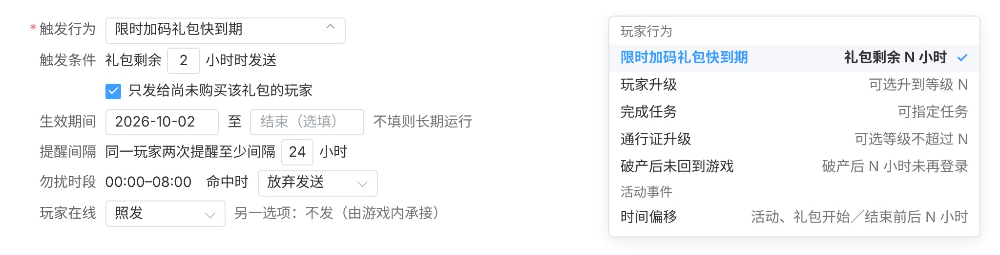
业务规则研发要做的改动 · 触发与对象 · 提醒间隔 · 勿扰与在线
研发要做的改动
| 停用旧入口：礼包后台「推荐礼包设定」里限时加码礼包未购买推播的时间与标题设置停用，礼包后台不再直接发推播。 |
| 数据迁移：已设的时间与标题迁成一条条件触发推播（礼包结束前 N 小时、未购买该礼包），计入每人每天上限。 |
| 接口改动：礼包后台发出礼包出现、结束事件，供条件触发推播取用。 |
触发与对象
| 触发行为分两组，先选一种，再填参数。玩家行为：玩家升级（可填升到等级 N）、完成任务（可选指定任务）、通行证升级（可填第 N 级及以前）、破产后未回到游戏（破产 N 小时后仍没回来才发），对象为触发玩家。活动事件：活动或礼包开始、结束前后 N 小时；每日定点＋状态（每天定点发送给当时在指定标签群组内的玩家）；排名变化待排行榜接入，暂不可选。 |
| 活动或礼包前后 N 小时：活动和所有玩家同时上架的礼包按统一的起止时间，所有玩家同一时刻发出；每位玩家各自出现的礼包（如限时加码礼包）按该玩家自己的礼包时间，发给出现该礼包的玩家。限时加码礼包快到期用这一种填。 |
| 活动、礼包开始或结束前后的提醒，活动、礼包改期后自动跟随；按统一起止时间的，对象选全部玩家或标签群组。 |
| 参数按触发行为填，如升到第几级、选哪个活动或礼包、开始或结束前后几小时；选礼包时可设未购买该礼包。 |
| 生效期间从开始日期起运行；不填结束日期则长期运行。 |
| 每位玩家各自出现的礼包，对象为出现该礼包的玩家，可再加只限、排除（群组，可多选），规则同第 1 页；右侧摘要显示近 7 天每天触发的人数。 |
提醒间隔
| 同一玩家两次提醒之间至少隔几小时，默认 24 小时。 |
| 上限拦截、勿扰放弃、因玩家在线不发的，间隔不起算。 |
勿扰与在线
| 触发时正值勿扰时段的，放弃发送（默认）或顺延到勿扰结束，每条推送单独选。 |
| 顺延的提醒到勿扰结束时，重新判断触发条件和每人每天上限。条件触发在勿扰结束时可能已失效（如礼包已过期）。 |
| 玩家在线时照发或不发，每条推送单独选。 |
| 默认按触发行为：玩家行为类（发生在游戏里）默认不发，活动事件类默认照发。 |
| 在线不发：触发时在线的玩家本次不可接收。游戏内提示另配快显（第 5 页）。 |
第一部分 游戏外推送第 3 页 / 共 10 页
短信
短信页签：短信列表
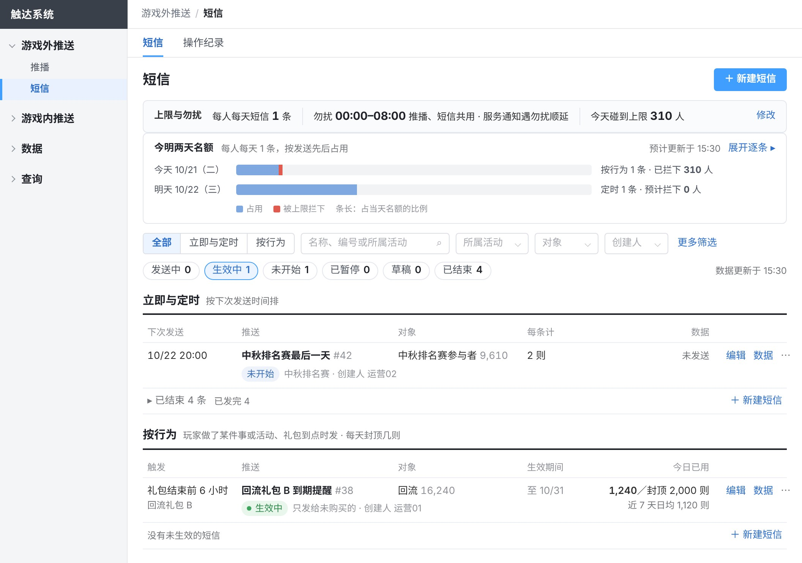
新建短信
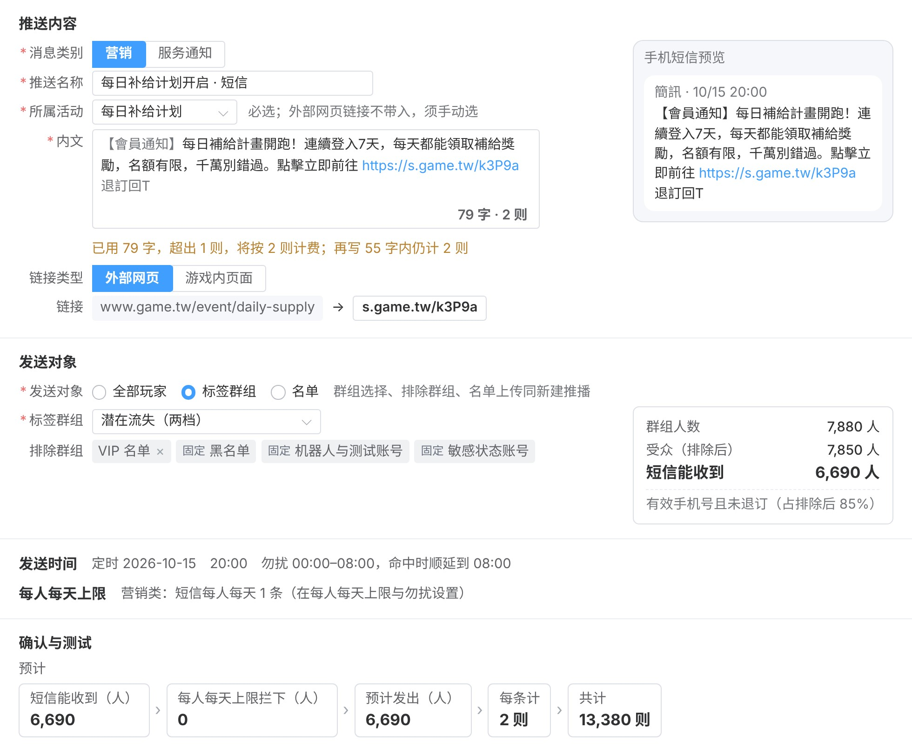
业务规则研发要做的改动 · 上限与封顶 · 内容与计费 · 发送
研发要做的改动
| 停用旧入口：营销侧按名单发短信与周期排程停用。 |
| 数据迁移：现有周期排程在触达系统用定时的重复重建。 |
| 接口改动：短信改由触达系统调用服务商发送，接入每人每天上限与勿扰；发送、到达数据写入触达系统数据页。 |
上限与封顶
| 短信每人每天上限 1 条，在短信列表顶部「上限与勿扰」只读显示、点修改才改；勿扰时段与推播共用一个设置；状态与上限拦截的算法同推播（第 1 页）。 |
| 条件触发发送须设每天最多发几则（默认 2,000 则），列表里显示当天已用与封顶；到顶后当天其余触发不发，次日 00:00 重新计数。 |
内容与计费
| 内文先选消息类别（营销或服务通知），繁中、越南文、英文三种语言的填法同第 1 页；每种语言的页签上分别显示字数与则数，超出一则时正文下提示还能写几个字；营销短信自动加品牌前缀【會員通知】和退订说明。 |
| 链接可选外部网页或游戏内页面；外部网页自动换成短链，统计点击次数。 |
| 按则计费，三种语言计法相同：70 字以内计 1 则；超过 70 字时每 67 字计 1 则。 |
| 品牌前缀和退订说明计入字数。 |
发送
| 对象、排除的选法同推播（第 1 页）；可接收短信的玩家为有有效手机号且未退订的玩家。 |
| 发送时间：定时或条件触发，填法同推播。 |
| 人数三行同推播（第 1 页）；右侧摘要另写按语言分别计的则数与共计几则（玩家收到哪种语言按哪种语言计）；编辑页四段，底栏与发布确认同推播。 |
第二部分
游戏内推送第 4–5 页
第二部分 游戏内推送第 4 页 / 共 10 页
按玩家分群配置弹窗
弹窗 · 弹窗规则
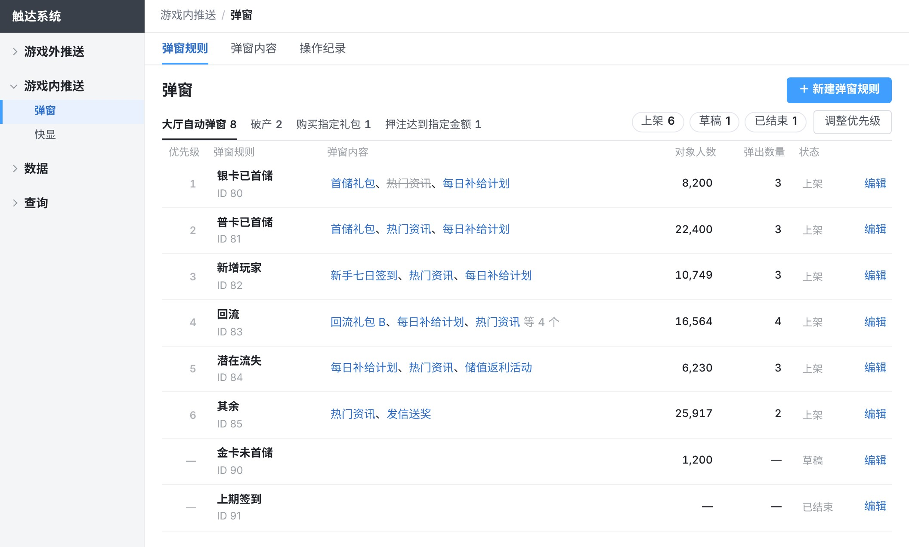
点「调整优先级」后
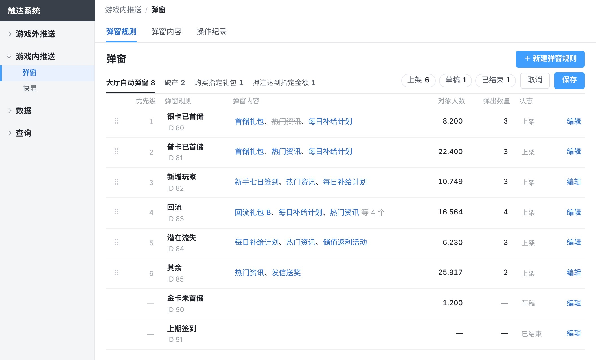
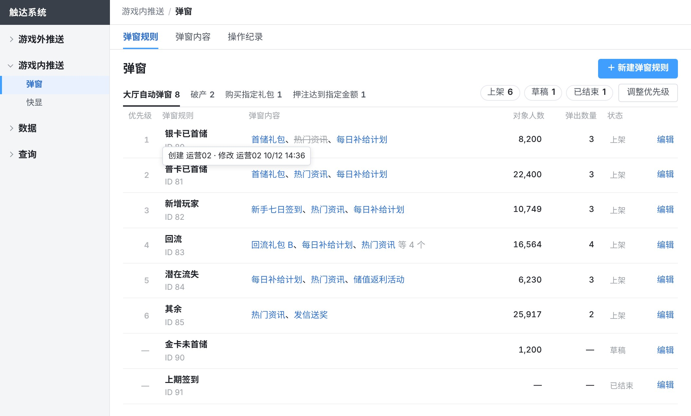
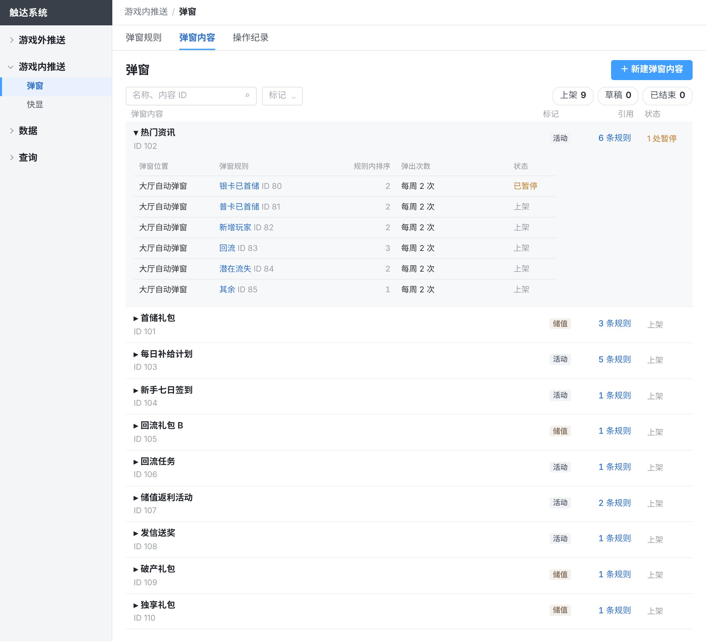
弹窗 · 取用方式
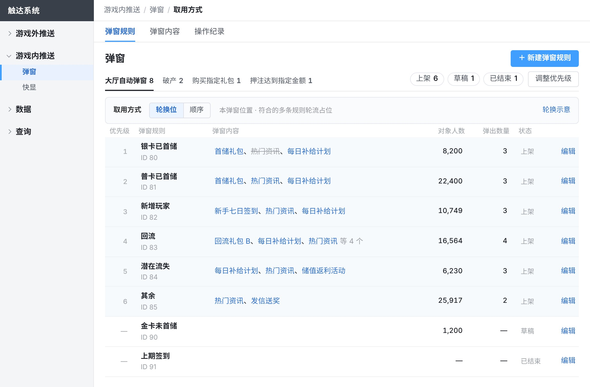
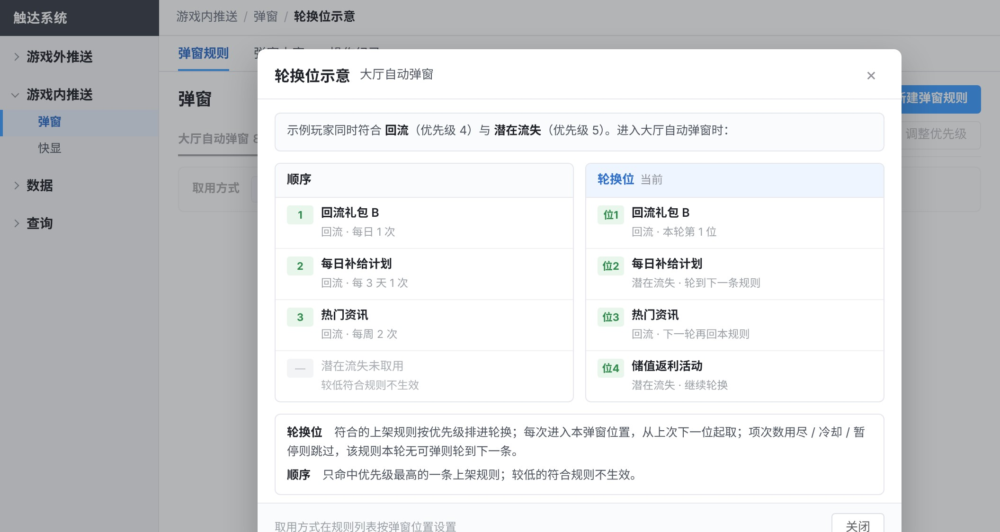
弹窗 · 筛到破产
点「破产」后
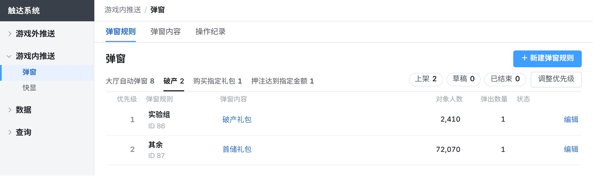
弹窗 · 弹窗内容
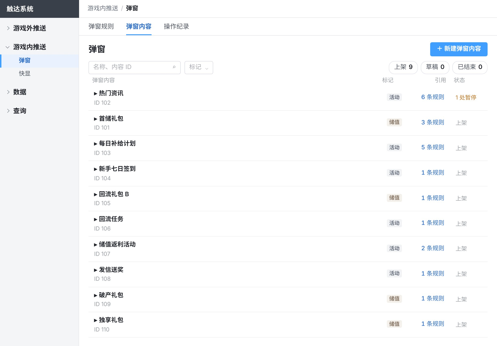
点「热门资讯」后
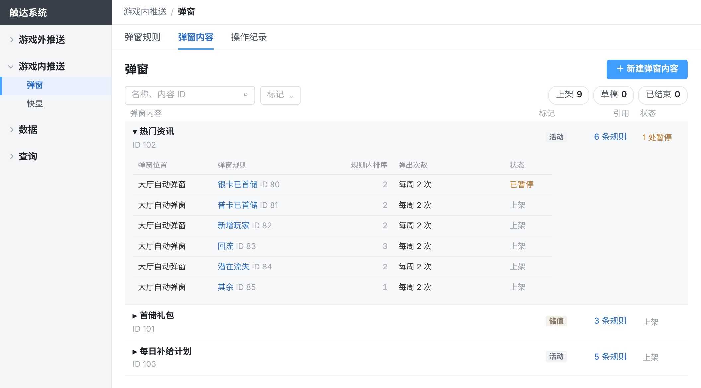
编辑弹窗内容
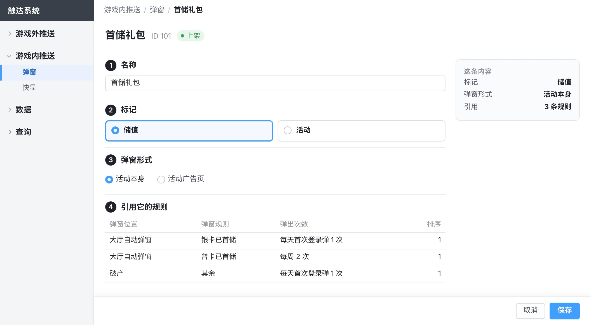
编辑弹窗规则 · 拖动未保存
拖动排序后、尚未保存
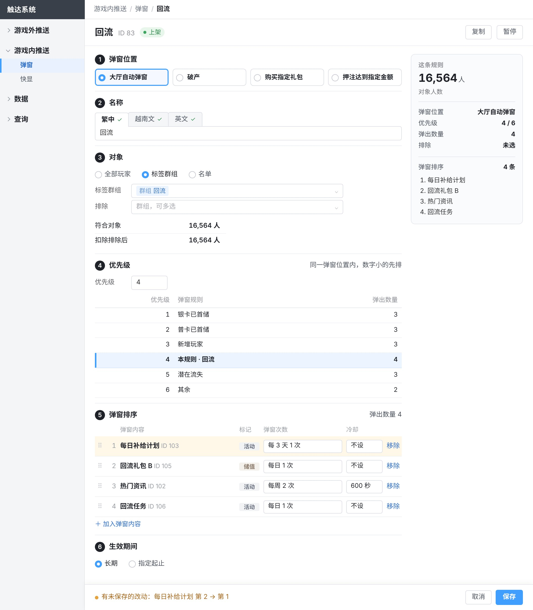
编辑弹窗规则
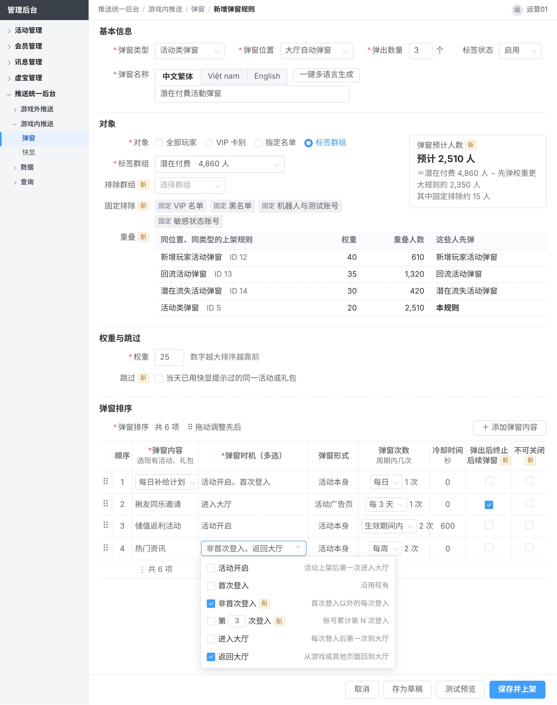
点保存后
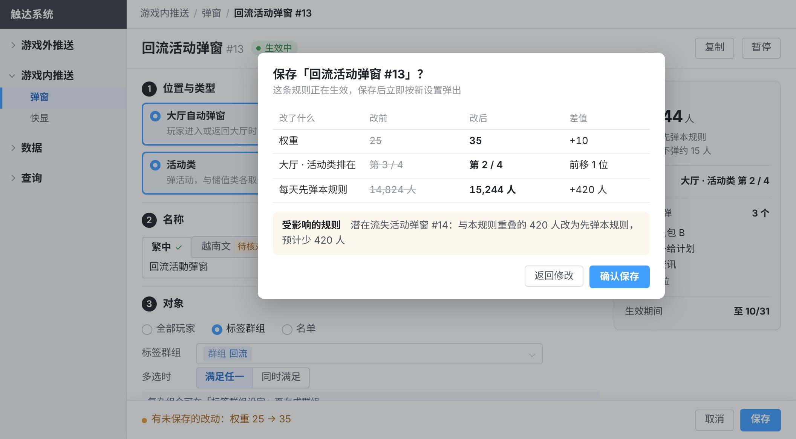
业务规则研发要做的改动 · 列表 · 取用 · 规则内容 · 对象 · 优先级 · 保存 · 实验 · 待研发确认
研发要做的改动
| 停用旧入口：活动管理「大厅弹窗顺序设定」与「弹窗排序配置」停用，由「弹窗规则」承接；子导航「玩家弹窗顺序查询」并入玩家查询（第 10 页）。 |
| 数据迁移：现有规则的名称、对象、弹窗内容、形式、次数、冷却、弹出数量迁入。原「权重」改为同一弹窗位置内的优先级，只决定谁先命中。次数、冷却按规则内每个弹窗迁入。原「活动类」「储值类」改为弹窗内容的储值、活动标记。原「游戏破产弹窗」改为弹窗位置「破产」。VIP 卡别迁为对应卡别的标签群组，指定名单迁为名单，标签状态停用的迁为已暂停。 |
| 接口改动：客户端取弹窗的接口按每个弹窗位置、按该位置取用方式返回当次命中的那一条规则（弹窗位置、排除、生效期间、弹出数量、该规则内每个弹窗的次数与冷却）。字段沿用现有的不改。 |
| 同一人可以同时符合多条规则，对象人数不相加。 |
列表
| 两个页签：弹窗规则、弹窗内容。弹窗规则顶部为四个弹窗位置页签：大厅自动弹窗、破产、购买指定礼包、押注达到指定金额，页签上写条数，默认大厅自动弹窗。表内不写分组标题。点「调整优先级」后才出现拖动手柄，只在当前页签内拖，草稿、已结束不参与，顶部为保存、取消。弹窗内容的顺序不在列表改。列表不分页。草稿、已结束跟在当前页签末尾，优先级写「—」。已结束的不参与取用。弹窗内容页有「新建弹窗内容」，打开同一张编辑页，不设弹窗次数、冷却列。可按名称、内容 ID 搜索，按标记筛选。状态筛选为上架、草稿、已结束。 |
| 每行一条规则：优先级、弹窗规则、弹窗内容、对象人数、弹出数量、状态、编辑。名称下为弹窗活动 ID。创建人、最后修改人与时间在名称悬停。弹窗内容按规则内顺序以「、」分隔，名称可点，跳到弹窗内容并展开该行；已暂停的为灰色删除线；超过 3 个显示前 3 个和「等 N 个」，悬停看全部及各自弹窗次数。上架、生效中不写在状态列。弹窗内容页默认全部收起，点行展开引用：弹窗位置、弹窗规则、规则内排序、该规则里的弹出次数、状态。今日曝光与点击率在数据页（第 7 页）。 |
| 状态：上架、草稿、已暂停、已结束。已暂停只停这一处引用。取用方式为「顺序」时较低规则不生效、不补弹；「轮换位」见「取用」。 |
| 弹窗规则视图有「调整优先级」、新建。弹窗内容视图有「新建弹窗内容」。操作纪录页签记录改动。优先级拖动点保存才生效，只在同一弹窗位置内。不在拖动过程中重算曝光。 |
取用
| 同一弹窗位置设取用方式，二选一：顺序｜轮换位（与「调整优先级」同层，位置级；不在单条规则里另设。规则编辑页右侧摘要只读显示本位置当前取用方式）。 |
| 顺序：玩家只命中优先级数字最小的一条上架规则，按该规则的弹窗顺序和弹出数量弹（旧行为）。次数已用完、冷却中、已暂停的项在这条规则里跳过，不改用较低规则。 |
| 轮换位：玩家符合的多条上架规则按优先级排进轮换位；每次进入该弹窗位置，从上次下一位起取规则，按该规则内弹窗顺序弹出；项次数用尽、冷却中、已暂停则跳过该项，该规则本轮无可弹则轮到下一条。 |
| 草稿、已结束不参与。不设每人每天上限。本原型演示轮换位。 |
规则内容
| 一条弹窗规则先选弹窗位置，四个平铺：大厅自动弹窗、破产、购买指定礼包、押注达到指定金额。选购买指定礼包时在下方填礼包，选押注达到指定金额时在下方填金额。大厅自动弹窗、破产没有这一行。然后填名称、对象、排除、优先级、弹出数量、弹窗排序、生效期间。 |
| 名称按繁中、越南文、英文填，繁中必填。 |
| 弹窗排序只在编辑弹窗规则页调整：列表加拖动手柄，可加入弹窗内容、可移除。每一条的标记为储值或活动。弹出次数、冷却在这一列里每个弹窗单独填写。弹出数量是这条规则最多弹几条。弹窗形式在弹窗内容上设。 |
| 弹出次数、冷却按规则内每个弹窗设，同一内容在不同规则可以不同。首储礼包在银卡已首储为每天首次登录弹 1 次，在普卡已首储为每周 2 次，在破产其余为每天首次登录弹 1 次，冷却都不设。热门资讯在各条规则均为每周 2 次、冷却 600 秒。每日补给计划每 3 天 1 次，冷却不设。回流礼包 B、回流任务、新手七日签到、独享礼包每日 1 次，冷却不设。破产礼包每次破产、每日 1 次，冷却不设。储值返利活动每周 1 次，冷却不设。发信送奖活动期间 1 次，冷却不设。 |
| 弹出数量：银卡已首储 3，普卡已首储 3，新增玩家 3，回流 4，潜在流失 3，大厅其余 2，实验组 1，破产其余 1，购买该礼包 1，押注达到 1。银卡排序为首储礼包 1、热门资讯 2（本规则内已暂停）、每日补给计划 3。普卡排序为首储礼包 1、热门资讯 2、每日补给计划 3。新增玩家排序为新手七日签到 1、热门资讯 2、每日补给计划 3。回流排序为回流礼包 B 1、每日补给计划 2、热门资讯 3、回流任务 4。潜在流失排序为每日补给计划 1、热门资讯 2、储值返利活动 3。大厅其余排序为热门资讯 1、发信送奖 2。实验组排序为破产礼包 1。破产其余排序为首储礼包 1。购买该礼包排序为储值返利活动 1。押注达到排序为独享礼包 1。 |
| 生效期间为长期或指定起止日期。 |
对象
| 对象为全部玩家、标签群组或名单，可再排除。标签群组与排除均只选已存群组，可多选。对象段下两行：符合对象、扣除排除后。回流未选排除，两行都是 16,564。 |
| 对象人数：银卡已首储 8,200，普卡已首储 22,400，新增玩家 10,749，回流 16,564，潜在流失 6,230，大厅其余 25,917。金卡未首储 1,200 为草稿，不参与取用。破产实验组 2,410，破产其余 72,070。购买该礼包 3,600。押注达到 5,200。 |
优先级
| 同一弹窗位置内，数字小的先排。取用方式为「顺序」时，玩家只命中优先级最高的一条上架规则，较低的符合规则不生效；为「轮换位」时，符合的多条按优先级进入轮换（见「取用」）。 |
| 已暂停、次数已用完、冷却中的项在当次命中的这条规则里跳过；「顺序」下较低规则不补弹，「轮换位」下该项跳过后可轮到下一条规则。草稿、已结束不参与。 |
保存
| 上架中的规则底部为取消、保存。有未保存的改动时左侧写出改了什么。 |
| 保存前若改了弹窗排序，确认框只列排序的改前、改后。不列人数。默认打开编辑页时不弹出这个框。 |
| 编辑页没有测试预览。要先看效果，新建一条对象为「名单」（填测试账号）的规则。单个玩家命中的规则在玩家查询（第 10 页）。 |
实验
| 实验组与对照组用标签群组分：按随机分桶号（每位玩家在同一实验里固定的 0–99 号，见第 1 页）建两个群组，如 0–49、50–99，两组各配一条规则，分别看两条规则的数据（第 7 页）对比。 |
待研发确认
| 现有「标签状态」除启用、停用外是否另有作用；没有则并入「已暂停」。 |
| 现有「操作」菜单里是否有上架；现有弹窗顺序里的先后用什么方式调整。 |
| 破产、购买指定礼包、押注达到指定金额各按本位置取用方式命中规则（顺序＝优先级最高一条；轮换位＝轮换）。现有破产若仍为多条同时弹出，待研发确认后改为按取用方式命中。 |
第二部分 游戏内推送第 5 页 / 共 10 页
快显
快显页签：快显列表
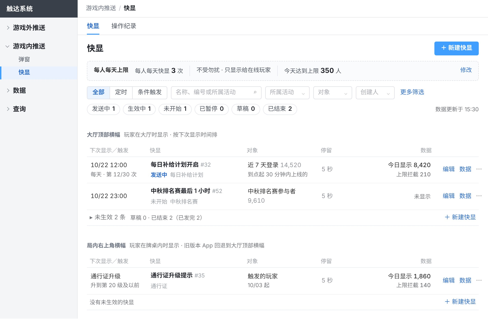
新建快显
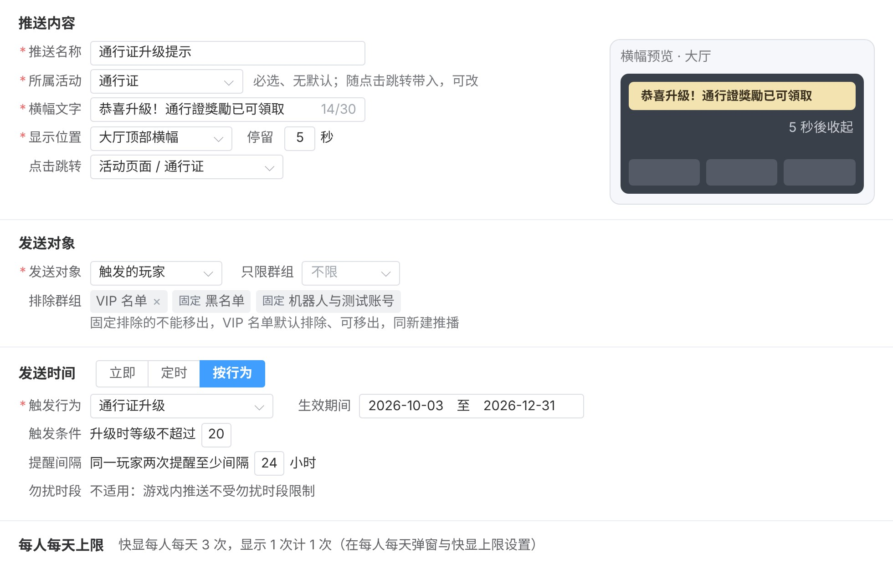
业务规则研发要做的改动 · 列表 · 每人每天上限 · 内容与对象 · 发送时间 · 编辑与发布
研发要做的改动
| 停用旧入口：客户端写死的通行证升级提示停用；大厅中奖播报不动。 |
| 数据迁移：通行证升级提示的文字、位置迁成一条条件触发快显。 |
| 接口改动：快显改由服务端下发，客户端按下发的文字、位置、停留秒数显示，并上报曝光与点击。 |
列表
| 按显示位置分两组：大厅顶部横幅、局内右上角横幅；组内按下次显示时间排，条件触发的写触发行为与参数；草稿与已结束的折叠在组末，点开或点状态计数即列出。 |
| 状态与推播一致：发送中（定时正在显示，或重复的定时在进行中）、生效中（条件触发在生效期间内）、未开始、已暂停、草稿、已结束；顶部计数点即筛，已结束的状态下写已发完或已停止。 |
| 一个搜索框按名称、编号或所属活动查；分段：全部、定时、条件触发；所属活动、对象、创建人下拉与创建日期（更多筛选）即时生效。 |
| 每行写名称、编号、状态、所属活动、创建人、对象及人数、停留秒数，数据列写今日显示次数与上限拦截的人数（与数据页同口径，标数据更新时间）；行上露编辑、数据，停止、暂停、结束、复制在「⋯」里。 |
每人每天上限
| 快显每人每天 3 次，在快显列表顶部设，点修改才改；显示 1 次计 1 次；不受勿扰时段限制。 |
| 快显按显示先后占用名额；列表顶部显示上限、不受勿扰、只显示给在线玩家与今天达到上限的人数。 |
内容与对象
| 快显是游戏界面里的即时横幅；可设横幅文字、显示位置（大厅顶部横幅、局内右上角横幅）、停留秒数、点击跳转的页面。横幅文字按繁中、越南文、英文三种语言填，填法同第 1 页。 |
| 显示位置需要新版本 App 时，可设旧版本回退到大厅顶部横幅，如通行证升级提示。 |
| 对象和排除的选法同推播（第 1 页）；条件触发的对象为触发的玩家，可加只限（群组，可多选）。 |
| 只显示给在线玩家。定时快显可设显示时段（到点起 0–240 分钟，默认 30 分钟）：时段内上线的对象上线时显示一次，时段结束后上线的不显示；设 0 即只显示给到点在线的玩家。 |
发送时间
| 定时、条件触发两张卡，只展开所选的设置；定时可设每天或每周几重复，同推播。 |
| 条件触发的触发行为、参数、生效期间与提醒间隔同第 2 页，另多一种「中奖」（中奖金额不低于 N，只有快显）；快显不显示「玩家在线时」。条件触发对象为触发玩家，仅在线显示。 |
编辑与发布
| 编辑分四段：名称与所属活动 → 对象 → 内容与显示（三种语言横幅文字、显示位置与停留秒数、旧版本回退、点击跳转）→ 发送时间。 |
| 右侧摘要：横幅预览；预计显示次数（定时为当时在线的对象减上限拦截；条件触发为近 7 天日均触发、当时在线、上限拦截，每行一个数），随填随算；每人每天上限。 |
| 底部固定操作栏：新建与草稿为取消、存为草稿、保存并发布；发送中、生效中与未开始的为取消、保存。不设发送测试；要先看效果，新建一条对象为「名单」（填测试账号）的快显（同弹窗，第 4 页）。 |
第三部分
数据第 6–9 页
第三部分 数据第 6 页 / 共 10 页
数据概览
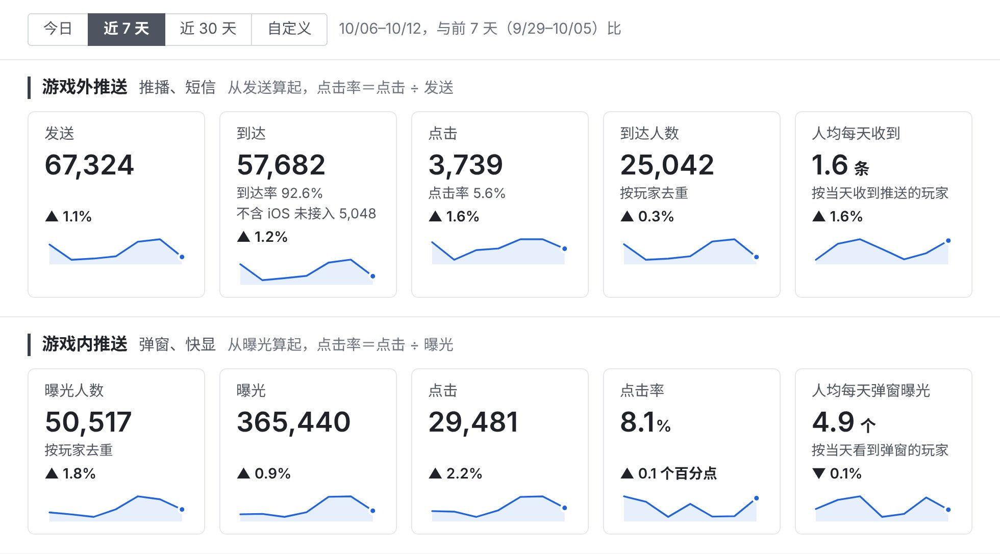
业务规则研发要做的改动 · 关键数字 · 每日走势 · 每条推送 · 筛选与导出 · 指标算法
研发要做的改动
| 停用旧入口：原「数据概览」「数据明细」两页停用，并成一页。 |
| 数据迁移：两页的历史数据按原口径迁入新数据页，可按日期查到上线前。 |
关键数字
| 游戏外推送：推播、短信合计的发送、到达、点击、到达人数和人均每天收到几条；到达率、点击率按推送方式分开列，不给合计（两种推送方式到达、点击的条件不同）。 |
| 游戏内推送：弹窗、快显的曝光人数、曝光、点击、点击率和人均每天弹窗曝光几个；各位置的数据见第 8 页。 |
| 每个数字显示与前一个同样长度的周期相比的增减，并附所选期间的每日小图。 |
每日走势
| 按日画所选期间连同对比的前一段：游戏外推送一层柱为每日发送、线为点击率；游戏内推送一层柱为每日曝光、线为点击率。 |
| 图上用竖线只标规则与设置的改动：游戏外推送一层标条件触发推送规则的改动与推播、短信列表顶部上限、勿扰设置的改动；游戏内推送一层标弹窗规则的改动与 App 发版。每次发送不标。单次发送见下方每条推送。竖线前后各画一段平均点击率（不含改动当天），图下逐条列出改动时间、改了什么、谁改的。 |
每条推送
| 一张表每行一条推播、短信（游戏外推送一层）或一条快显、弹窗规则（游戏内推送一层），只列所选期间内发送或曝光过的；名称下一行写 #编号与状态，叫法与各列表一致（发送中、生效中、已结束等，已结束写原因）。 |
| 游戏外推送一层的列是推送方式、所属活动、发送时间、受众、发送、到达与到达率、点击、点击率；游戏内推送一层是曝光人数、曝光、点击、点击率。 |
| 到达率的分母不含 iOS 未接入的发送，所以不等于到达÷发送；合计行只给数量，到达率、点击率写「—」。条件触发推送和弹窗规则持续运行，数据按所选时间范围累计。 |
| 点一行进入这条推送或规则的数据（第 7 页）；推播、短信、快显、弹窗各列表行上的「数据」也直达同一页。 |
筛选与导出
| 按推送方式、所属活动、发送时间（定时、条件触发）、状态、标签群组、名称或编号筛选；游戏内推送一层按活动或礼包筛选时，列出含对应弹窗内容的弹窗规则。 |
| 可按任一列排序；「导出」导出当前筛选下的表。 |
指标算法
| 游戏外推送从发送算起，点击率＝点击÷发送；游戏内推送从曝光算起，点击率＝点击÷曝光；两层分开统计，不相加。 |
| 到达率＝到达÷可确认到达的发送；iOS 旧版本 App 无到达回执，这部分单列为「iOS 未接入」，不进分母。 |
| 人均每天收到几条＝当天收到推播或短信的玩家平均每人收到几条；人均每天弹窗曝光几个＝当天看到弹窗的玩家平均每人看到几个；都取所选期间每天的平均。 |
第三部分 数据第 7 页 / 共 10 页
单条推送与规则数据
单条推送
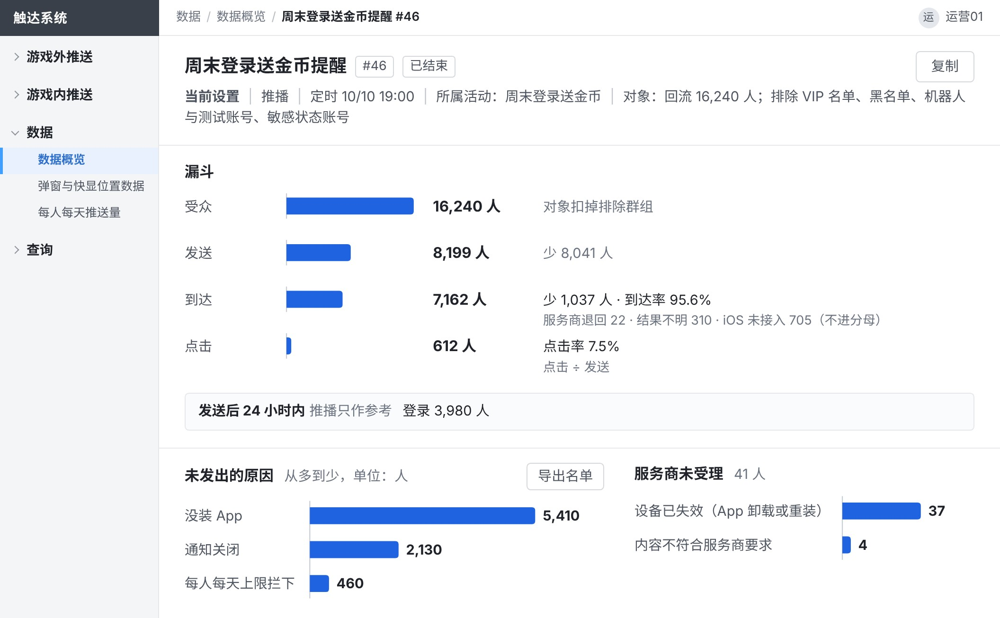
单条弹窗规则
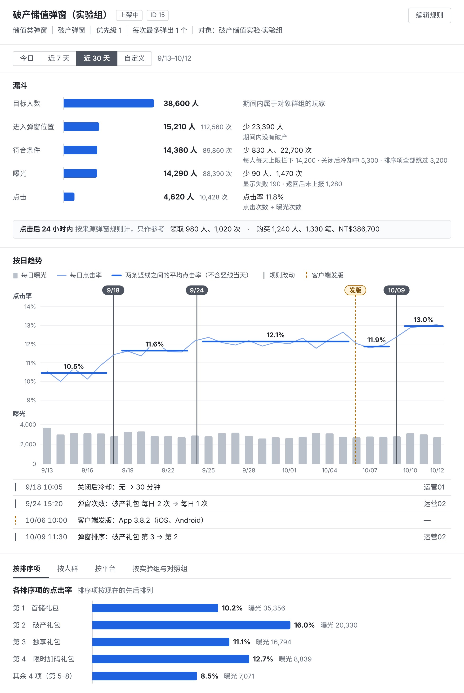
业务规则进入方式与顶部 · 单条推送 · 单条弹窗规则
进入方式与顶部
| 从数据概览的每条推送点一行，或从推播、短信、快显、弹窗列表行上的「数据」进入；面包屑写「数据概览 / 名称 #编号」。 |
| 顶部一行写名称、状态，下一行「当前设置」：推送写推送方式、发送时间、所属活动、对象与排除；弹窗规则写弹窗位置、优先级、对象、弹出数量、弹窗内容。右侧按钮推送为「复制」，弹窗规则为「编辑规则」。 |
单条推送
| 从受众、发送、到达到点击，每一步少了多少；另列发送后 24 小时内登录的人数。 |
| 未发出的原因：发送前拦截的按原因分项、从多到少排列，如没装 App、通知关闭、勿扰放弃、上限拦截；服务商未受理的另列；可导出名单。 |
| 短信用「发送后 24 小时内登录」看效果；推播的登录数据只作参考。短信以打开游戏为主，不以链接点击为准。 |
单条弹窗规则
| 漏斗：一条规则从进入弹窗位置、符合条件、曝光到点击，每一步少了多少。 |
| 趋势图按日显示这条规则的曝光与点击率，图上标出这条规则每一次保存的改动和 App 发版，画法同位置数据（第 8 页）。 |
| 可拆分：按弹窗内容、按人群、按平台。 |
第三部分 数据第 8 页 / 共 10 页
弹窗与快显位置数据
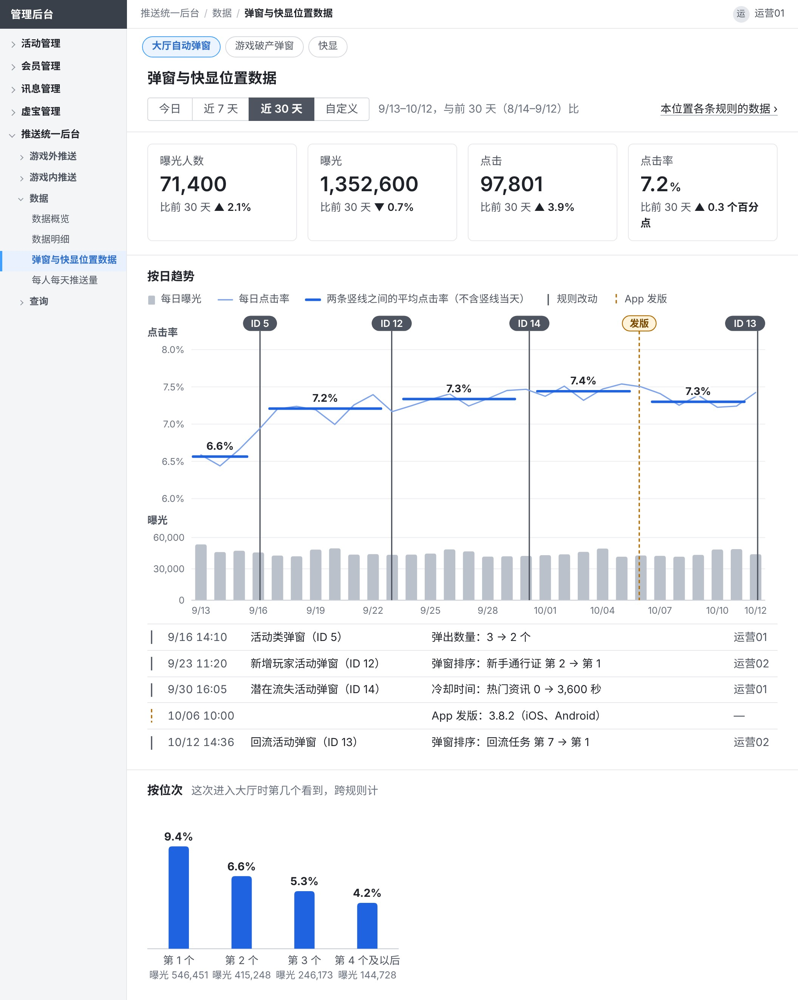
业务规则位置统计 · 按位次 · 改动与发版
位置统计
| 大厅自动弹窗、破产、购买指定礼包、押注达到指定金额、快显各自统计曝光人数、曝光、点击、点击率，与前一个同样长度的周期对比。 |
| 每个位置一张趋势图，按日显示曝光与点击率；图上标出这个位置上所有规则的改动和 App 发版。 |
| 这个位置上各条规则的数据不在本页另列，页头链接到数据概览的游戏内推送一层（第 6 页）；曝光人数按玩家去重。 |
按位次
| 按玩家本次进入该位置的弹窗位次统计曝光与点击率。位次按命中规则的弹出顺序计算。 |
改动与发版
| 趋势图上相邻两次改动或发版之间，画出这段时间的平均点击率。 |
| 趋势图上的规则改动取自弹窗页的操作纪录，图下按时间逐条列出每次改动的日期、改了什么、谁改的。 |
| 规则改动或 App 发版之前的数据照样保留，与之后的数据画在同一张趋势图上。 |
第三部分 数据第 9 页 / 共 10 页
每人每天推送量
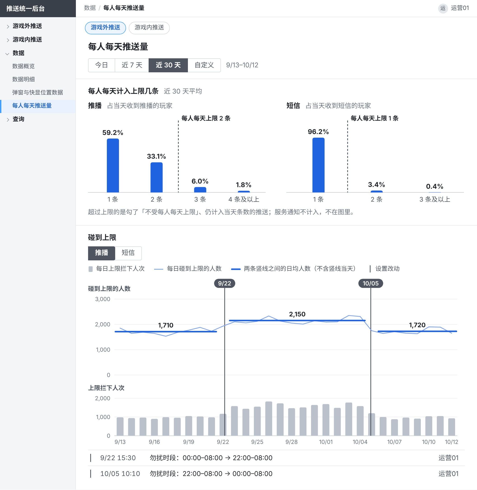
业务规则游戏外推送 · 游戏内推送
游戏外推送
| 收到推播的玩家每天计入上限 0 条、1 条、2 条（到上限）各多少人；服务通知不计入。短信每人每天上限 1 条，不画分布。 |
| 每天达到上限的人数与上限拦截人次，推播、短信分开看；图上标出推播、短信列表顶部上限与勿扰设置的改动（第 1 页）。 |
游戏内推送
| 玩家每天看到几个弹窗、几次快显的分布。弹窗不设每人每天上限，图上不标弹窗上限。快显标出每人每天 3 次，以及每天达到上限的人数走势。 |
第四部分
查询第 10 页
第四部分 查询第 10 页 / 共 10 页
玩家查询
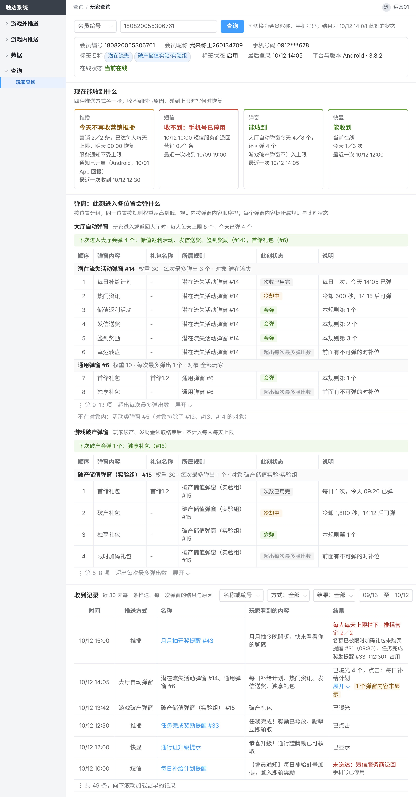
业务规则研发要做的改动 · 查询与玩家资料 · 接收状态 · 弹窗 · 收到记录 · 账号权限
研发要做的改动
| 停用旧入口：弹窗后台「玩家弹窗顺序查询」停用，由玩家查询承接，原两张弹窗顺序表的各列并入「弹窗」段。 |
| 接口改动：查询接口扩展为返回推播、短信、弹窗、快显四种推送的接收状态、原因与收到记录。 |
查询与玩家资料
| 一个输入框，左侧下拉切换会员编号、会员昵称、手机号码；结果写明是哪一刻的状态。 |
| 玩家资料：会员编号、会员昵称、手机号码（打码）、标签名称（玩家所在的全部标签群组）、标签状态、最后登录、平台与版本、在线状态。 |
接收状态
| 推播、短信、弹窗、快显各一张卡片。状态为可接收、不可接收 · 原因，或已达每日上限。其下写今日已计入、上限、恢复时间、最近一次时间。 |
| 不可接收的原因：通知关闭、未安装 App、无有效手机号、手机号已停用、不在线。已达每日上限写恢复时间。服务通知不受限。 |
弹窗
| 按每个弹窗位置写出命中的那一条规则及其弹窗：顺序、弹窗次数、结果。结果为将弹出、已暂停、次数已用完、冷却中、未命中。同时符合但未生效的规则另列，灰字写优先级低于命中规则。 |
| 示例玩家标签为银卡已首储、新增玩家。大厅命中银卡已首储（优先级 1，对象 8,200，弹出数量 3）：顺序 1 首储礼包每天首次登录弹 1 次，将弹出；顺序 2 热门资讯每周 2 次、冷却 600 秒，已暂停；顺序 3 每日补给计划每 3 天 1 次，次数已用完，10/11 21:00 已显示。新增玩家优先级低于银卡已首储。破产命中其余（优先级 2，对象 72,070，弹出数量 1），首储礼包每天首次登录弹 1 次，将弹出。购买该礼包（对象 3,600）、押注达到（对象 5,200）未命中。 |
收到记录
| 近 30 天推播、短信、快显的每一条和每次弹窗的结果与原因，按时间倒序；可按名称或编号、推送方式、结果、日期筛选。 |
| 已达每日上限时写明占用的推送；弹窗一行写规则名称 #编号，可展开各弹窗结果。 |
账号权限
| 沿用后台现有的账号权限，分运营、只读两种：运营可用全部页面，可新建、编辑与发送；只读账号可查看全部页面，不能改动；客服用只读账号。 |